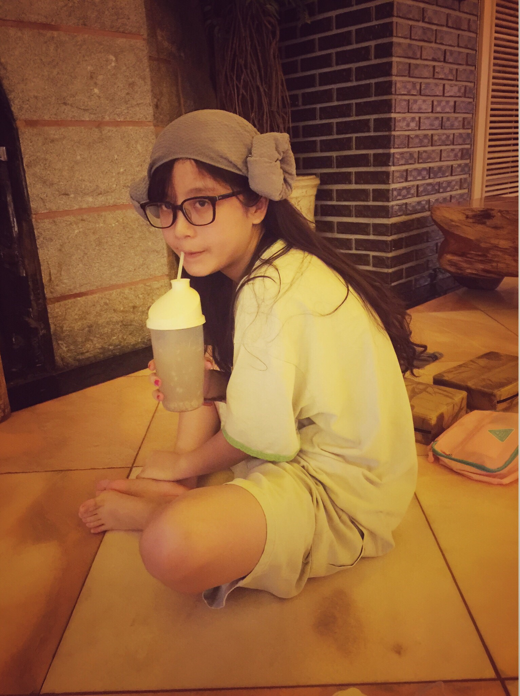
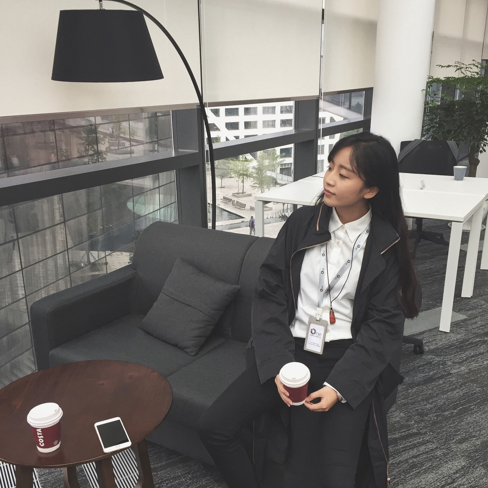
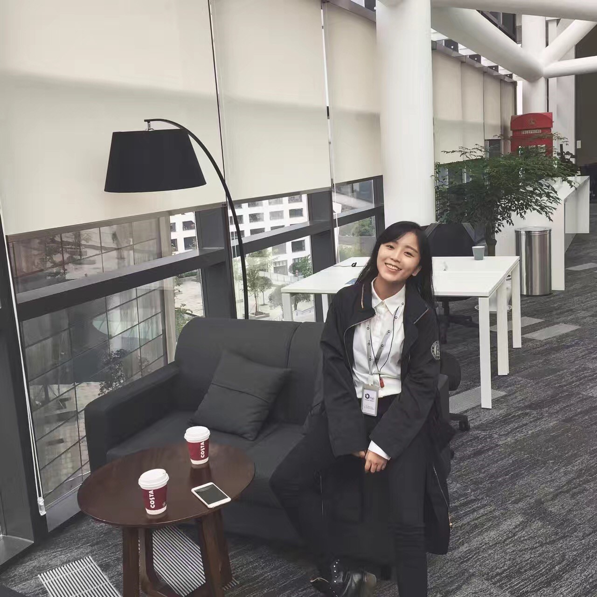

百变如你，一见倾心
都说最迷人的姑娘是百变的，你摸不透自己到底有多了解她。
我就是这样一个姑娘，不看俗世眼光，不听旁人非议，我可以淘宝小碎花，拿起麦克风跟着音乐尽情摇摆，也可以踩着高跟鞋，在职场游刃有余。
我是特别独立但不特立独行的自己，从小妈妈就告诉我，女孩子要有自己的个性，不因富贵浮夸，也不因落魄自卑。在过去的很多年里，一直保持自己的个性，成为如今这个多面百变的自己。
简约或者普通的款式是日常穿搭的必备良品，一些时尚好用的小物件就可以使得整个扮相大不相同。

有时候，我是一个穿着汗蒸服捧着大水杯就可以私拍的中二女青年；
也可以是在简单叠穿的秋日阴天里，秀出自己的大长腿；
抑或是在灯光迷离的夜色里笑魇如花。
了解到TailorX，是那次独自旅行去上海的时候，正值春寒陡峭，上海的街头春雨沥沥。在雨里走走停停，无意间走到店铺门口，原谅我是一个“勤俭持家的girl”，看到私人定制，好物好价的时候，我幻想着自己穿上私服将世界踩在脚下的那种欢欣，开启了我人生第一次的私人定制。
设计师是一个兼具颜值和帅酷的男生，一直觉得异性设计师更能给一些更好的建议，发型师或者设计师我都会选择异性。
经过一系列沟通后，我和设计师的想法几乎是一致的，色彩也选择大气百搭的黑色，长款，爆款外套。适合稍冷的时候外搭，内搭任何颜色都可以，简约的款式，却又是经久不衰的经典款。
在仔细的量体后，我就下单赶去下一段旅途了，等我这趟出游回到成都的时候，定制的衣服也已经收到了。
我爱身体在路上，我也爱朝九晚五用力生活。
纵使高楼林立的城市，让人更多感受的是冰冷，但怎奈我又无法真的远离，沉浸在乡村田野中。


今年TailorX成都分店开业，之前我的设计师也从上海过来成都负责店铺的运营，在设计师的邀请下，我又一次造访这个让我惊艳的品牌TailorX，成都的店铺位于高新区节能科技大厦高区的38楼，店铺采用一贯的简约设计，中间展示厅摆放了上千种面料样品，全部都是时下最新的进口面料，根据不同用途做了精细的分类，展柜上展示了上百种不同材质和样式的纽扣，树脂、木质、玳瑁、布料各种材质应有尽有；落座后，为我端上了一杯现磨咖啡，咖啡淡淡的苦味跟空气中散发的清香融合在一起，给人舒适惬意的感受。轻柔细腻的音乐，让人很舒服的可以瘫坐下来去跟设计师沟通或者是认真的欣赏正在播放的最新的秀场内容；在等待设计师与其他顾客沟通的时候，认真感受了一下，仔细听可以听到键盘清脆的敲击声和设计师之间窸窸窣窣的沟通声， 那是在创造美丽和自信的声音。
待设计师忙完后，我跟他阐述了想要定制一件小黑裙想法，因为跟之前去上海体重变化不大，在重新确认了几个重要数据后，进行了设计沟通后，确定了定制的方案，接下来就是耐心的等待收货啦~
离开店铺的时候，看着各自忙碌的身影，版师在精细的确定板式，旁边小伙伴在其左右耐心的协助，一切景象都是忙碌却有序。因为巧合遇见，却因称心而爱上，以后我的穿搭都会交给TailorX。